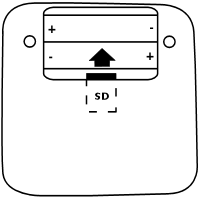

17 décembre 2009
Firmware du WikiReader en français
Voilà, en attendant qu'OpenMoko fasse une mise à jour pour prendre en charge les accents dans l'interface, je publie ma version francisée du firmware du WikiReader dont je vous ai parlé précédemment.
Téléchargement (.tar.gz / 840 Ko)
Instructions :

- Enlevez le clapet et les piles
- Retirez la carte microSD du WikiReader
- Insérez cette carte dans votre ordinateur en utilisant un lecteur de carte par exemple
- Décompressez le contenu du fichier zip en téléchargement à la racine de la carte microSD et confirmez le remplacement des fichiers.
- Replacez la carte dans WikiReader, les piles, le clapet
- Vous avez maintenant l'interface du WikiReader en français ainsi qu'un clavier Azerty fonctionnel !
Commentaires 4